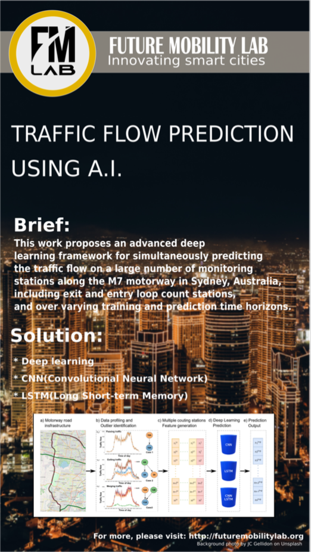

Panel Steering Member of the IoT Australia’s “Trusted Technology and Data” program
Dr. Simona Mihaita is now a Panel Steering Member of the IoT Australia’s “Trusted Technology and Data” program comprising 180 participants, alongside the following committee members:
Winner of the Women in AI Awards 2022
Dr. Simona Mihaita is a Winner of the Women in AI Awards 2022, Category AI in Infrastructure. The competition saw 160 participants across Australia and New Zealand and celebrates success of women in AI.
Click here to read more:
ITS Australia Awards 2021 Finalists
We have been selected as finalists of the ITS Australia Awards 2021 in two categories: Excellence in Research & Development and Excellence in Transport Data.
Estimating the Impact of Electric Vehicles Across Transport and Energy Systems (Excellence in Research & Development category):
University of Technology Sydney Estimating the Impact of Electric Vehicles Across Transport and Energy Systems UTS collaborated with
the Australian Energy Market Operator using data from Transport for NSW, to deliver a new transdisciplinary approach for estimating
the impact of future Electric Vehicle adoption. The novel approach uses a joint transport and energy consumption modelling approach,
that connects the transport and energy sectors. The project estimated the electric vehicle adoption impact on consumer waiting times,
traffic congestion and energy demand across multiple EV uptake scenarios.
Next Generation of Digital Twins (Excellence in Transport Data category): UTS Data Science Institute has been working in the last years on building the Sydney Real-Time Digital Twin Platform,
integrating at once several types of data sources such as all the city 3D layout with top layers like the public transport movement in real-time,
transport simulation for incident scenario management in real-time, water pipes layout via IoT sensing data transmission and air quality real-time
transmission from monitoring stations in Sydney.
Next Generation of Digital Twins (Smart Cities category): UTS Data Science Institute has been working in the last years on building the Sydney Real-Time Digital Twin Platform,
integrating at once several types of data sources such as all the city 3D layout with top layers like the public transport movement in real-time,
transport simulation for incident scenario management in real-time, water pipes layout via IoT sensing data transmission and air quality real-time
transmission from monitoring stations in Sydney.
Projects and Industry Engagement
[July 2021] FMlab has won the pitch contest for two research projects with TfNSW on the topics of a) “Data Analytics for Train Level Crossings”
with the purpose of investigating the top 50 most-riskiest train level crossings in NSW, and b) “V2X freight and emergency vehicle priority trial”
via an iMOVE CRC, with the purpose of analyzing the accuracy of the current freight priority trial in Wollongong
[April-July 2021] Fang Chen together with members of the Data Science Institute and FMlab delivered several online demos with regards to the Digital
Twin modelling on other ongoing work to several government and industrial agencies such as the Department of Spatial Services NSW, DHL, Sydney Trains, TfNSW, etc.
[April 2021] FMlab members welcomed a Transdev delegation at UTS for exploring possible collaborations together regarding the data analytics for planning purposes of transportation systems.
[May 2021] Simona Mihaita visited Transdev operational centre at the Circular Key and Balmain Wharf with the purpose of investigating the current initiatives regarding ferry passenger counting.
UTS - Monash Joint Seminar on AI for Transportation Applications
[9th of June 2021] FMlab has organised a joint half-day seminar together with the Monash University Monash Institute of Transport Studies,
Faculty of Engineering on the topic of AI in transportation Applications. List of presentations delivered:
09:40 AM: Prof. Hai Vu short introduction of the Monash Institute of Transport Studies
09:50 AM: Dr. Simona Mihaita short introduction of the UTS Future Mobility Lab and the UTS Data Science Institute.
10:00 AM: Speaker 1 UTS: Artur Grigorev, PhD student FMlab “Traffic incident duration prediction using advanced machine learning”
10:30 AM: Speaker 1 Monash: Bo Wang, Monash, “Short-term traffic flow prediction in bike-sharing networks using 3DResNets”
11:00 AM: Speaker 2 UTS: Seunghyeon Lee, Lecturer FMlab, “Behaviour model of heterogeneous low-carbon traffic flow”
11:30 AM: Speaker 2 Monash: Homayoun Hamedmoghadam, “Identification of evolving bottlenecks in transportation networks”
[17th of June 2021 ] Simona Mihaita is an Invited Program Committee member for AJCAI2021 (the 34th Australasian Joint Conference on Artificial Intelligence). FMlab team members
are contributing significantly research publications to the conference which will be organised at UTS in December 2021.
The study has been done on the Sydney Train network with 175 stations, 506 platforms and has estimated and re-calibrated 2.9 million OD matrices to be used for passenger assignment on each platform
UTS Transport and Artificial Intelligence Research Forum Conclusion
The Transport and A.I. Research forum saw around 100 representatives from government, academia and industry joining forces here at
University of Technology Sydney for presenting their ongoing works and future needs in terms of data processing, concerns, AI needs, etc.
The event was opened by the NSW Chief Scientist and Engineer, Hugh Durrant-Whyte who insisted on the usage of Deep Learning and AI technology to be applied not independently,
but together with causal models in order to clearly understand why specific disruptions happen in the transport network, followed by Distinguished Prof.
Fang Chen which debated by we need data-driven analytics and how these have been applied in the Data Science Institute at UTS. The session continued with presentations from Pascal Labouze,
Executive Director of Operational Systems at Transport for NSW who insisted that there is huge need to go towards more data-integrated centralized approaches for managing transport,
equally supported by the Director of Traffic management and Safety, Ben Hubbard in ACT who highlighted that a similar approach is currently undertaken in Canberra.
Jeff Sharp from Transurban presented some of the data-driven solutions being used for monitoring the City Link in Melbourne and multiple data integrations for incident detection while V/line’s
representatives Unal Altay and Andres Hernandes showcased a data-driven train analysis platform for incident management, real-time train line performance monitoring and punctuality prediction
developed in partnership with UTS.
Second session saw presentations from both government and industry with specific case studies where data science has been applied successfully for solving some of ardent problems.
The Roads and Maritime Services in Sydney is moving along the data driven approaches by creating a dedicated team to analyse,
integrate and predict traffic counts collected from all around the city of Sydney under the supervision of David Scott,
while Sydney Trains have already deployed advanced Machine learning systems in collaboration with UTS to detect train track defects
automatically and learn from previous locations where these defects have appeared (work presented by Ian Greager, Principal Manager in Sydney Trains).
The session saw real-life applications from Christian Porter - Group Executive General Manager at the Downer Group on how data has helped to plan new services
(such as on-demand buses and ferries), followed by Paul Rybicki from DSpark who showcased the value of utilising mobile data for transport management and crowd behaviour analysis,
and TomTom’s Jennifer Loake who highlighted ongoing advancement techniques in both Lidar scanning and traffic routing solutions.
The event was closed by the event’s sponsor – Intel and its Solution Architect Peter Kerney who showcased some of the software and hardware capabilities that can support advanced applications of data-driven and AI solutions.
Finally, Data Arena demonstrations have been put in place to present the current real-time traffic monitoring platforms and simulation models that the FM-lab has been working on.
UTS Transport and Artificial Intelligence Research Forum
Join our inaugural event highlighting Artificial Intelligence solutions for transport.
Click here to register.
Data-driven artificial intelligence has become an important part of modern decision making processes, including in transportation,
where the abundance of data represents a challenge for transport agencies and research scientists alike.
The objective of this Research Forum is to link government, industry and academic professionals who are interested in or delivering
innovative data-driven, artificial intelligence and/or cloud-based solutions to emerging transport problems. Together,
we will explore the practical use of cutting-edge technologies to deliver efficient, evidence-based transport planning for Australia.
Key questions that will be explored in the Forum include:
How can we predict traffic congestion in advance of city grid lock?
Can we predict the impact of traffic disruptions and test relevant action plans?
Can data be used to model public transport delays and optimise daily operations?
How can data and artificial intelligence guide people towards selecting optimal routes and modes for travel?
How can analysing crowd movement data assist in developing better traffic and transport management solutions?
Places are limited, please register to confirm your attendance
Date and Time:
Fri., 6 December 2019
8:00 am – 2:00 pm AEDT
Event Schedule:
08:00 AM - Guests arrival and Breakfast
09:00 - 10:30 AM (1h 30’) Session 1: Transportation Research meets government – presentations and panel discussion
09:15 – 09:30 AM: Fang Chen – Executive Director UTS Data Science
09:30 – 09:45 AM: Pascal Labouze - Executive Director Operational Systems at Transport for NSW
09:45 – 10:00 AM: Unal Altay (CIO) & Andres Hernandez (GM Performance Support) V/Line Victoria
10:00 – 10:15 AM: Ben Hubbard - Director of Traffic management and Safety, ACT government
10:15 – 10:30 AM: Jeff Sharp - General Manager, Technology Partnership & Innovations, Transurban>
10:30 - 11:00 AM Morning tea break
11:00 - 12:30 PM (1h 30’) Session 2: A.I. solutions fostering transport decisions – presentations and panel discussion
11:00 – 11:15 AM: David Scott - Director Network & Asset Intelligence Roads and Maritime Services
11:15 – 11:30 PM: Ian Greager - Principal Manager, Sydney Trains
11:30 – 11:45 PM: Christian Porter - Group Executive GM, Corporate Strategy, Downer Group
11:45 – 12:00 PM: Paul Rybicki - Country head Director DSpark Australia, DSpark
12:00 – 12:15 PM: Jennifer Loake – Partner Development Manager, TomTom
12:15 – 12:30 PM: Peter Kerney – Enterprise Solution Architect at Intel Australia
12:30 - 13:30 PM: Lunch break
13:00 - 14:00 PM: Data Arena demonstrations and UTS tour.
Location:
Aerial UTS Function Centre
15 Broadway 9
#Building 10, Level 7
Ultimo, NSW 2007
This Event is Sponsored by Intel Corporation
Three Papers Presented in ITS World Congress 2019
Mihaita, A.S., Liu, Z., Cai, C., Rizoiu, M.A “Arterial incident duration prediction using a bi-level framework of extreme gradient-tree boosting”, ITS World Congress 2019, Singapore, 21-25 Oct 2019,
PPT
Mao, T., Mihaita, A.S., Cai, C., Traffic Signal Control Optimisation under Severe Incident Conditions using Genetic Algorithm, ITS World Congress 2019, Singapore, 21-25 Oct 2019.
PPT
Shaffiei, S. Mihaita, A.S., Cai, C., Demand Estimation and Prediction for Short-term Traffic Forecasting in Existence of Non-recurrent Incidents, ITS World Congress 2019, Singapore, 21-25 Oct 2019.
PPT
Our Slides for CEBIT 2019

Attendance at 2019 Prime Minister’s Prizes for Science
Dr. Mihaita was invited by the Prime Minister Scott Morrison to attend “2019 Prime Minister’s Prizes for Science” at the Parliament House in Canberra on 16th of Oct 2019
Paper Accepted for Presentation at the IEEE ITSC 2019 Conference - New Zealand, 27-30 Oct 2019
[30 June 2019] Mihaita, A.S., Li, H., He, Z., Rizoiu, M.-A. (2019) Motorway Traffic Flow Prediction using Advanced Deep Learning,
Proceedings of the 22nd Intelligent Transportation Systems Conference (ITSC'19) Auckland, New Zealand.
27-30 October, 2019. Preprint link
Presentation at “Science in the city” – D61 Series Event
[27 June 2019] Dr. Mihaita delivered a talk in the "Science in the city" talk series event organized by Research Director Simon Dunstall of Data61,
together with Arthur Maheo from Monash university,
Fiona Calvert from the Department of Transport Victoria.
Event link of future series to come: https://lnkd.in/gy5k6Gv
Collaboration with NSW Smart Sensing Network
[18 June 2019] FTMlab started a collaboration with NSSN (NSW Smart Sensing Network) on Air quality investigation for the city of Sydney.
Seminar at the Planning and Transport Research Center
National Workshop on Integrated Autonomous and Connected Vehicle Systems
[13 June 2019] Prof. Fang Chen, Dr. Simona Mihaita and A/Prof. Adam Berry attended a national workshop organized by Fortescue Metal Group in Perth, together with representatives from: Queensland University of Technology, Australian National University, Curtin University, University of Western Australia, Edith Cowan University. The main purpose is the building of the new Karratha Living Lab with integrated autonomous and connected vehicle systems.
PhD Opportunities
The Future Tranport Mobility Group is actively searching to recruit 2 new full-time PhD students (domestic or international) to be working on the following Topics:
9th of May 2019: Dr. Mihaita and Dr. Adam Berry met with Transgrid representatives in an official visit to Techlab given by Ray Kirby (Tech Lab Director) with the purpose of establishing future collaborations and projects in a DXC Digital Transformation Centre. Dr. Mihaita delivered a presentation on the UTS Australian Institute of Data Excellence capabilities in data analytics and artificial intelligence, while Dr. Berry provided insights on energy research capabilities.
Discussion with National Research Foundation from Singapore
[14 May 2019] Dr. Mihaita and Dr. Fang Chen received the National Research Foundation from Singapore for discussing future collaboration discussions between UTS and Singaporean research Institutions on topics such as Urban Mobility, CyberSecurity and Artificial Intelligence. The presentation workshop was delivered by:
Dr. Mihaita who is currently the C.I. in the ARC Linkage Project funded under the Australian-Singapore Strategic Collaboration Scheme set-up, working together with Data61, Swinburne University of Technology in Australia and international partners from Singapore such as: NUS (National University of Singapore) and NTU (National University of Technology in Singapore). The purpose of the collaborative ARC LP is to build “Data-driven Traffic Analytics for Incident Analysis and Management”. Video demonstration were put together by Dr. Tuo Mao, Senior Engineer in UTS Future Mobility Research group.
Dr. Zhidong Li, Senior Lecturer currently working on Delay and punctuality prediction for Sydney Traisn and V-Line
Dr. Kun Yu, Lecturer working on Cyber Security across user trust and user behaviour analysis for education.
Dr. Marian-Andrei Rizoiu, Lecturer working on fake news and social bots detection, as well as online user behaviour modelling.
Tech Lab Event
[11 April 2019] Dr Mao, Dr. Mihaita, Dr. Yang Wang and Dr. Liang have attended the Tech Lab event and presented Demos of our ongoing work on the transport modelling, data driven prediction and also water pipe failure prediction.
DXC's Visit
[30 April 2019] Dr Mihaita, Dr. Fang and Dr. Kun Yu received a DXC visit and delivered a presentation of capabilities in the Data Arena.
Special Interest Session Accepted by ITS World Congress 2019
The Special Interest Session SIS925 on “Crowd movement analysis and modelling” has been accepted by the ITS World Congress organisers. Dr Mihaita will organise the session with the following confirmed speakers (2 more to be added):
Christopher Bentley, Data61|CSIRO “Multi-modal analytics for travel behaviour in Sydney, Australia”,
Li Mo, NTU, Singapore, Smart Mobility: A Data and Sensing Point of View,
Muhamad Azfar Bin Ramli, Institute of High Performance Computing, A*STAR, Modelling of island-wide movement of public transport commuters through data-driven agent-based simulations
Paul Rybicki, DataSpark, Crowd movement analytics.
Three Papers Accepted by ITS World Congress 2019
Mihaita, A.S., Liu, Z., Cai, C., Rizoiu, M.A “Arterial incident duration prediction using a bi-level framework of extreme gradient-tree boosting”, ITS World Congress 2019, Singapore, 21-25 Oct 2019,
Preprint link
Mao, T., Mihaita, A.S., Cai, C., Traffic Signal Control Optimisation under Severe Incident Conditions using Genetic Algorithm, ITS World Congress 2019, Singapore, 21-25 Oct 2019.
Preprint link
Shaffiei, S. Mihaita, A.S., Cai, C., Demand Estimation and Prediction for Short-term Traffic Forecasting in Existence of Non-recurrent Incidents, ITS World Congress 2019, Singapore, 21-25 Oct 2019.
Preprint link